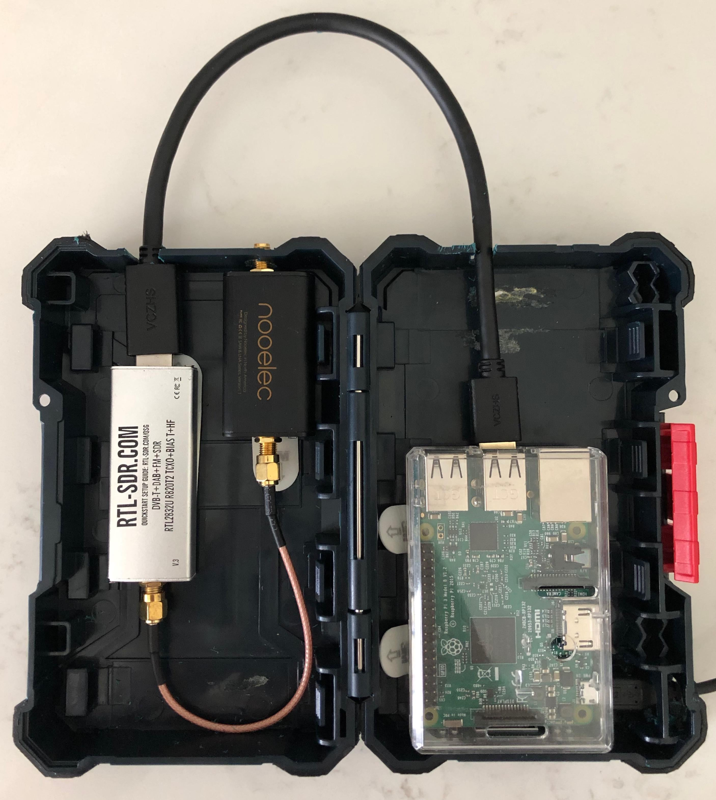

Raspberry Pi Hardware Setup
Transporting the Raspberry PI, RTL-SDR dongle, and filter can be a little difficult. I decided to create a case that would help make the kit easier to plug in and use. In the fall, winter, and even some parts of the spring, I leave this outside permanently but I would not advise leaving this out during the summer as it may lead to heat issues.
I made a case for my RTL-SDR, LNA, and Raspberry Pi, which make my NOAA ground station. This is attached to a QFH antenna and is setup to automatically capture, decode, and upload NOAA satellite passes. All the decoded images and pass details are uploaded to an AWS website hosted via S3. See here:

As you can see the RTL-SDR is connected to the Nooelec Filter + LNA using a jumper cable. The antenna connection protrudes just a bit from the case to allow it to connect to an antenna when closed. All of the hardware is on the case using Commander Strips.
That jumper cable is bending a little more than I'd like but that's about as much distance as I could create between the two devices/connections.
The RTL-SDR is connected to the RPI with a 12 inch USB cable. I dislike this part about the case and open to any suggestions. The 6in cable was not enough distance and didn't allow the case to be opened. It also required a lot of bending. This way, it may stick out of the case but the bend is better and less restrictive.

Once closed you can see the SMA connector for connecting to an antenna and the USB cable that connects the RTL-SDR and RPI. In the background on the top left you can see where the power cable comes in for the RPI. I've been monitoring temperature and it's usually between 42 and 50 degress Celcius but I have seen it go all the way up to around 58 degrees when uploading images.
Parts List